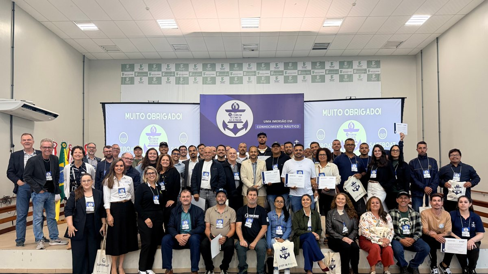
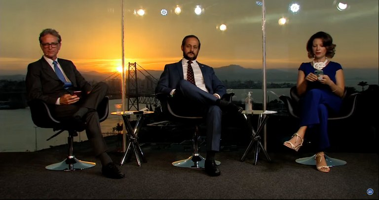
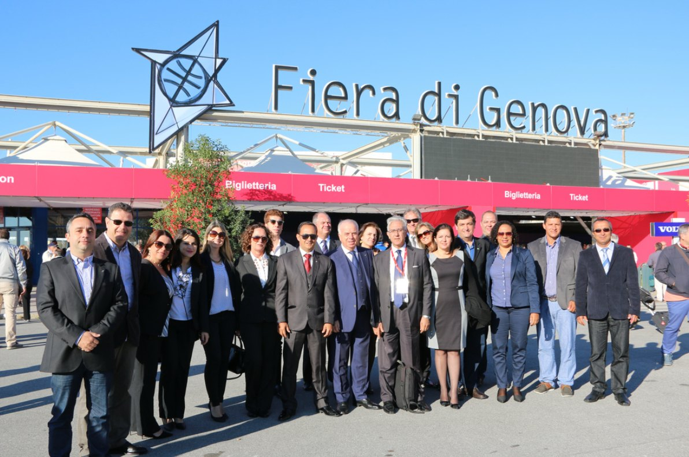
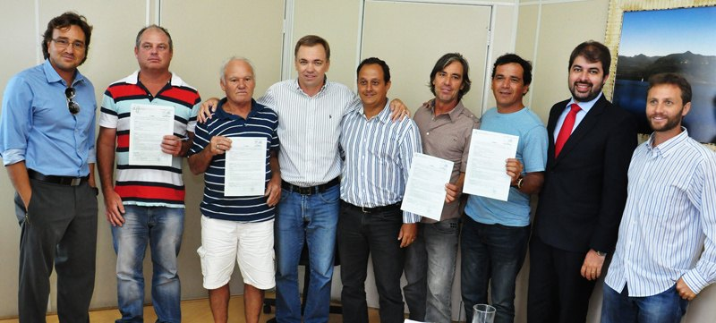
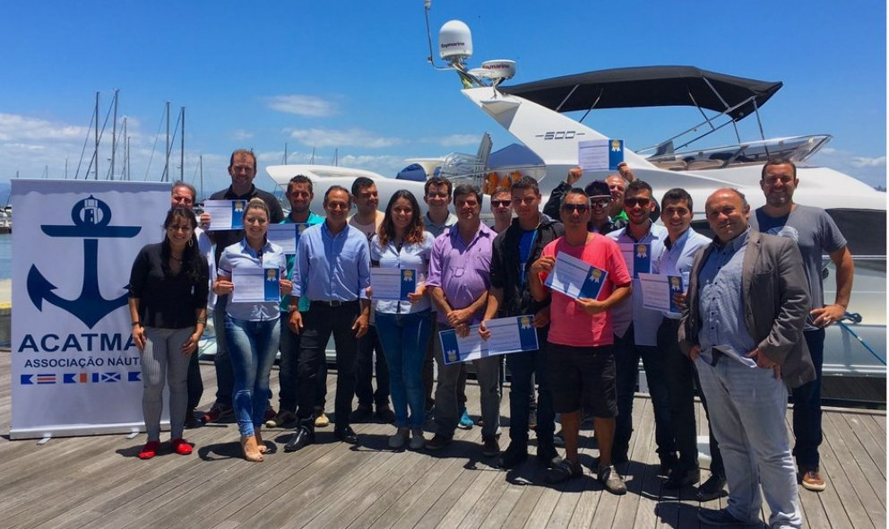
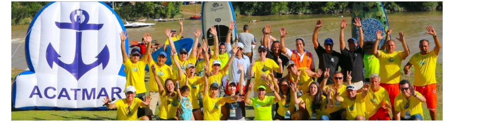
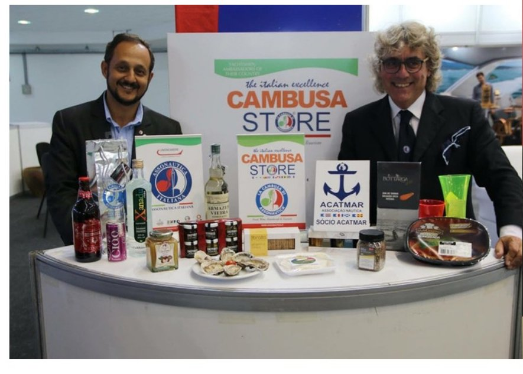
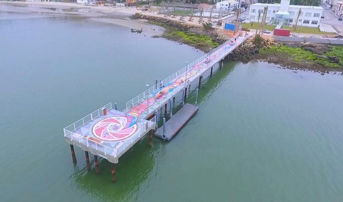
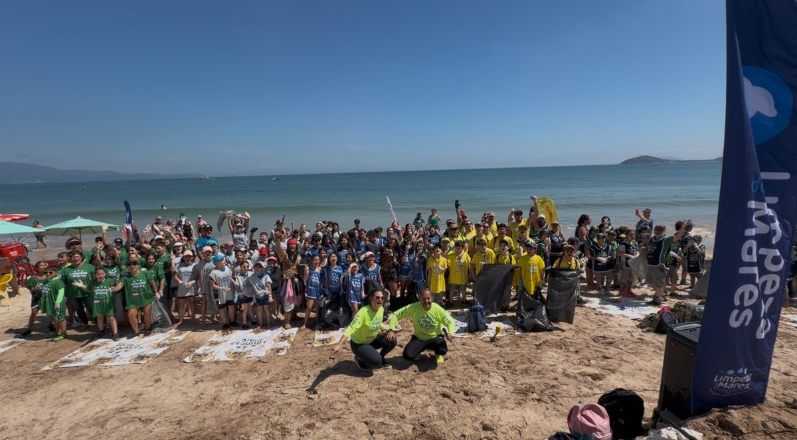
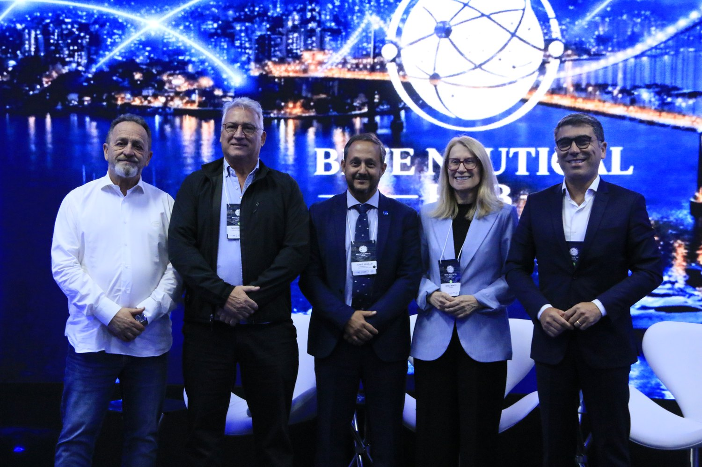

O que a ACATMAR está fazendo
Folheie as edições da ACATMAR
Cada boletim reúne as principais ações do semestre. Clique em Folhear para o efeito de virar página, ou baixe o PDF.
Ações que movem a Economia do Mar
Muitos realizados em conjunto com parceiros. Alguns têm site próprio, é só clicar.










A referência do setor náutico brasileiro
Desde 2008, a ACATMAR, Associação Náutica Brasileira, é a referência para a cadeia produtiva do setor náutico no país. Como entidade sem fins lucrativos, a missão é promover a cultura do uso das águas e impulsionar o desenvolvimento sustentável da Economia do Mar.
Fazer parte é ganhar voz e oportunidades
Como membro da ACATMAR, você fortalece o setor e ganha vantagens exclusivas.
Representatividade e defesa setorial
Voz ativa junto aos poderes legislativos e institucionais. Participe de conselhos, fóruns e comissões técnicas e ajude a moldar as políticas do setor.
Crescimento e visibilidade
Conecte-se a uma rede de líderes. Sua empresa é promovida no nosso site e você usa o selo “Sócio ACATMAR” para agregar credibilidade à marca.
Assistência especializada
Apoio de especialistas jurídicos e técnicos e acesso a dados estratégicos para embasar as decisões do seu negócio.
Expansão de mercado
Visitas técnicas e encontros B2B ampliam sua rede em nível global, com acesso a fóruns, seminários e congressos.
Incentivos e descontos
Condições especiais para a legalização de estruturas náuticas e outros serviços essenciais. Mais economia e agilidade.
Sua marca navega com credibilidade
Some sua empresa a quem defende, de fato, os interesses de todo o setor náutico brasileiro.
Quero me associarJunte-se a nós e navegue
em um mar de possibilidades
Torne-se membro da ACATMAR e impulsione o seu negócio, contribuindo para o desenvolvimento sustentável do setor náutico brasileiro.